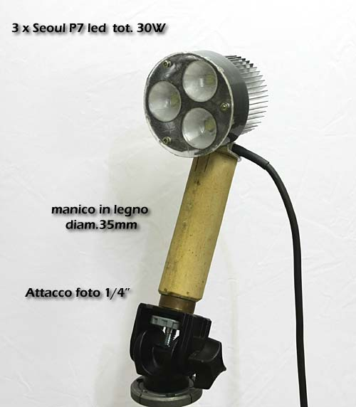
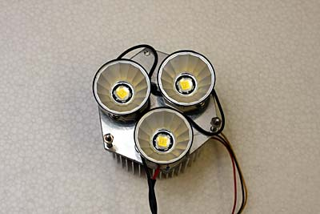
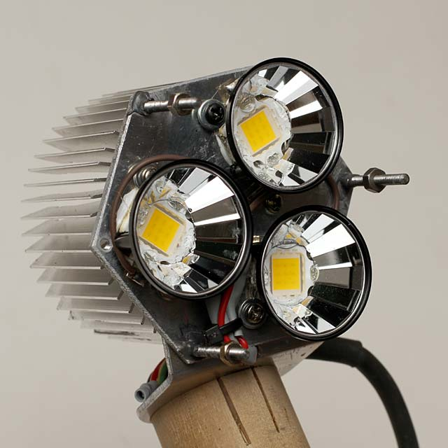
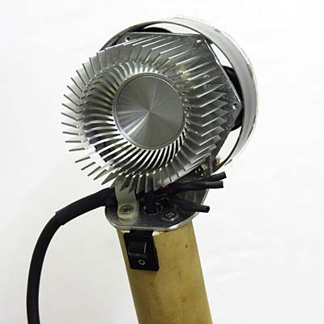
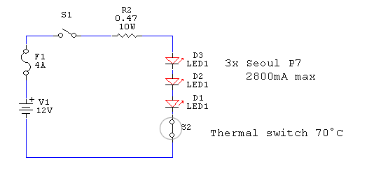
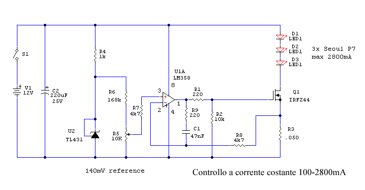

LED & illuminazione
Illuminatore Video 30W Power Led
Potente torcia da oltre 3000 Lumen - ottima soluzione per sub. "Fai da te" di R.Chirio
Indice della pagina
I LED P7 non sono più disponibili, è comunque possibile realizzare l'illuminatore con altri tipi di led , come i CREE XM-L T6 o i LED COB di varie potenze.

Aprile 2009
Semplice realizzazione dalle grandi prestazioni.
Non esiste ancora un prodotto commerciale paragonabile alle prestazioni ottenute con tre Led Seoul P7 usati in serie alla massima potenza.
Con questo semplice gruppo ottico è possibile fare una potente lampada sub, per riprese video subaquee. Basta realizzare un contenitore stagno in alluminio, che abbia anche lo spazio per le batterie.
Gruppo ottico.
- Il gruppo composto dai led P7 con lenti Fraen da 29°.
- Il tutto montato su una piastra di alluminio da 80 mm di diametro spessore 3mm.

Gennaio 2014
- Il gruppo composto dai led COB 10W Warm 3000°K con lenti Fraen da 29°.
- Le lenti Fraen sono tagliate per coprire tutta l'area di emissione dei led da 10W
- La luce emessa ha un rendimento più basso rispetto ai led a 6300°K, ma la luce è molto gradevole e non stanca la vista, spettro molto simile alle lampade alogene.
- Ogni led assorbe 0,9A a 10,2V
- Circuito regolatore seriale come indicato più avanti, per sfruttare la batteria fino a 10,80V

- Il dissipatore posteriore è appena sufficiente a tenere la potenza dei tre led accesi, per servizio continuo in ambienti caldi è necessario utilizzare un ventilatore a 12V.

Schema elettrico per batterie da 12V 7Ah

Per sicurezza è stato messo un interruttore termico sulla piastra led, spegne se la temperatura supera i 70°.
E' bene mettere un fusibile da 4AT in serie agli accumulatori, per proteggere da cortocircuiti.
Schema elettrico per batterie da 12V regolazione corrente da 100 a 2800mA

Con questo schema è possibile controllare e stabilizzare la corrente che passa nei led.
- Tramite il potenziometro R5 è possibile regolare la luminosità dei led da quasi spento fino al massimo, compensando la scarica della batteria.
- Il Mos-Fet deve essere montato su radiatore.
- Questa configurazione a regolazione lineare, è particolarmente efficace in quanto inizia già a regolare con 100mV di caduta, permettendo di sfruttare al massimo il campo di carica della batteria.
Commenti
- Realizzazione semplice e robusta, adatta a tutti gli impieghi dove serva una forte illuminazione.
- Ottima per realizzare filmati di buona qualità, di notte all'aperto, come pure in locali scuri oppure bunker e fortificazioni.
- Molto valida per lampade sub, la soluzione di tre led P7 è stata provata in immersione e i risultati sono eccezionali, il consumo di soli 30W permettono lunghe autonomie, usando due batterie da 12V 7A si superano le 4 ore di autonomia...
2009 © Roberto Chirio: all rights reserved.